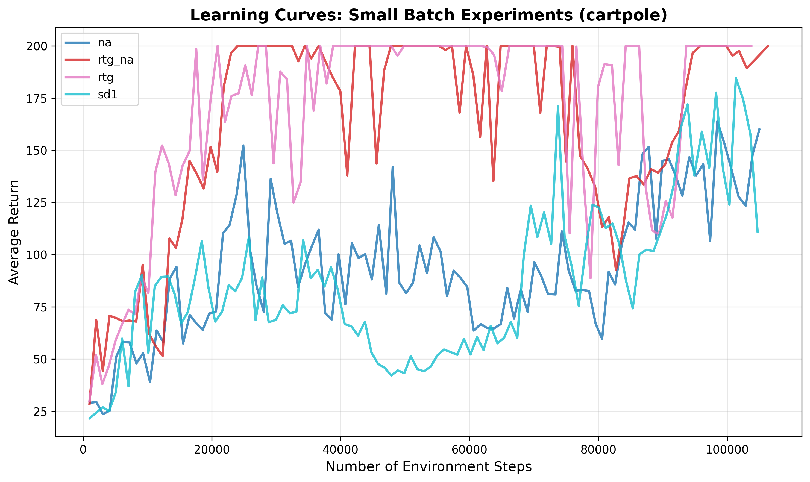
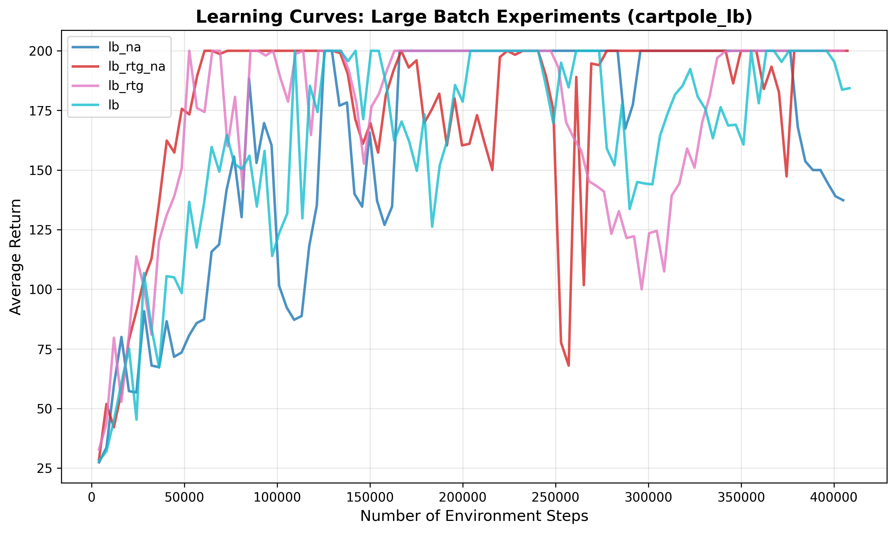
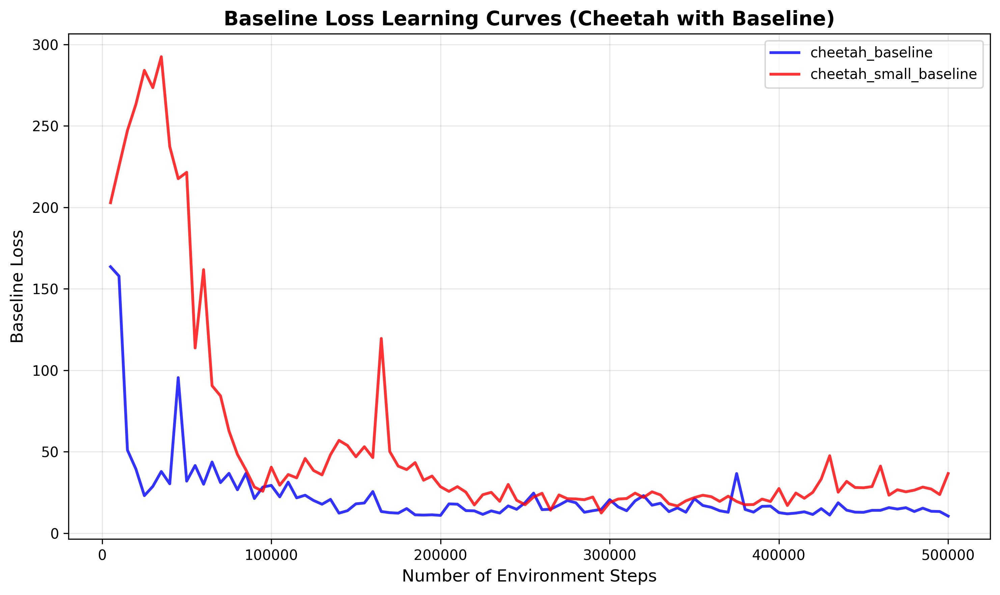
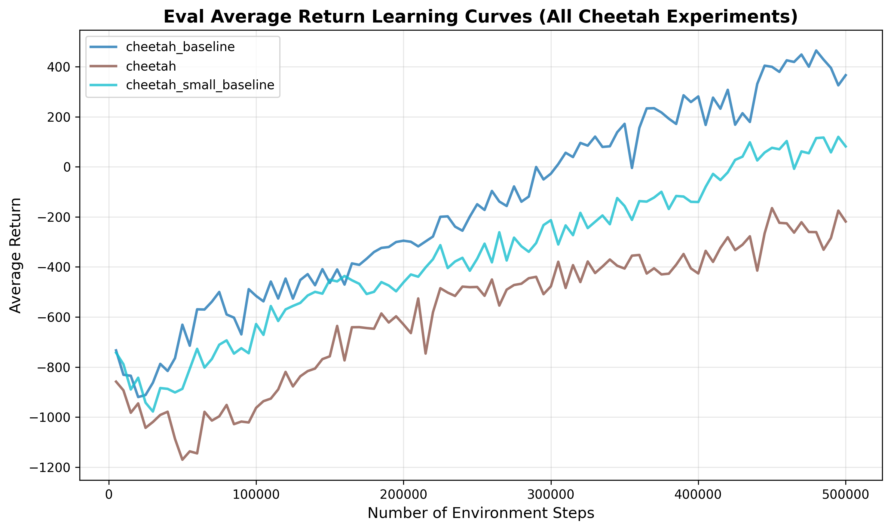
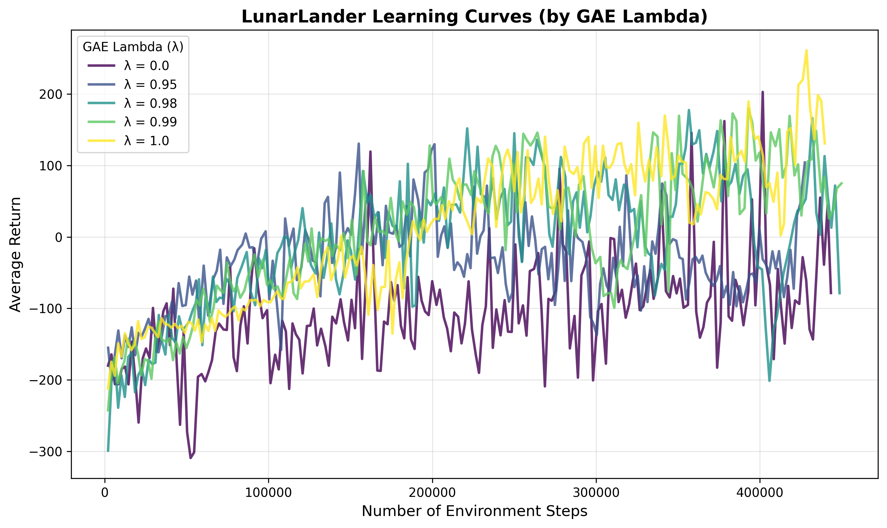
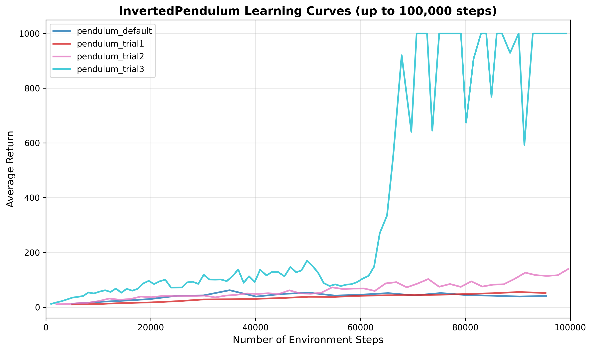

Policy Gradient Methods for CartPole
Project Overview
This assignment explores policy gradient methods for reinforcement learning. We compare different value estimators (trajectory-centric vs. reward-to-go) and examine the effects of advantage normalization and batch size on learning performance.
As much as I would like to insert all the math again, I'll just refer you to the spec for details: spec
CartPole Environment
Policy Gradient and Reward-to-Go Value Estimators
The goal is to achieve a maximum return of 200 for the best configurations in both small and large batch cases.
We conducted eight experiments total, comparing different configurations:
- Small batch experiments
- Trajectory-centric value estimator without advantage normalization
- Trajectory-centric value estimator with advantage normalization
- Reward-to-go value estimator without advantage normalization
- Reward-to-go value estimator with advantage normalization
- Large batch experiments
- Trajectory-centric value estimator without advantage normalization
- Trajectory-centric value estimator with advantage normalization
- Reward-to-go value estimator without advantage normalization
- Reward-to-go value estimator with advantage normalization
Command Line Configurations
Exact command line configurations used to run the CartPole experiments:
# Small batch experiments (batch size 1000):
uv run src/scripts/run.py --env_name CartPole-v0 -n 100 -b 1000 \
--exp_name cartpole
uv run src/scripts/run.py --env_name CartPole-v0 -n 100 -b 1000 \
-rtg --exp_name cartpole_rtg
uv run src/scripts/run.py --env_name CartPole-v0 -n 100 -b 1000 \
-na --exp_name cartpole_na
uv run src/scripts/run.py --env_name CartPole-v0 -n 100 -b 1000 \
-rtg -na --exp_name cartpole_rtg_na
# Large batch experiments (batch size 4000):
uv run src/scripts/run.py --env_name CartPole-v0 -n 100 -b 4000 \
--exp_name cartpole_lb
uv run src/scripts/run.py --env_name CartPole-v0 -n 100 -b 4000 \
-rtg --exp_name cartpole_lb_rtg
uv run src/scripts/run.py --env_name CartPole-v0 -n 100 -b 4000 \
-na --exp_name cartpole_lb_na
uv run src/scripts/run.py --env_name CartPole-v0 -n 100 -b 4000 \
-rtg -na --exp_name cartpole_lb_rtg_na
Small Batch Learning Curves
Comparison of learning curves (average return vs. number of environment steps) for the small batch experiments. The x-axis shows the number of environment steps (Train EnvstepsSoFar).

Large Batch Learning Curves
Comparison of learning curves (average return vs. number of environment steps) for the large batch experiments. The x-axis shows the number of environment steps (Train EnvstepsSoFar).

Questions
1. Which value estimator has better performance without advantage normalization: the trajectory-centric one, or the one using reward-to-go?
If we compare the two learning curves without normalizaion (pink is reward-to-go, teal is trajectory-centric), we can see that the reward-to-go curve is generally faster at reaching higher returns.
2. Between the two value estimators, why do you think one is generally preferred over the other?
Reward-to-go is generally preferred over the trajectory-centric estimator because it is less variable. This stabilility is because the reward-to-go estimator is based on the immediate rewards, which are more consistent than the trajectory-centric estimator, which is based on the entire trajectory
3. Did advantage normalization help?
Using advantage normalization did not seem to actually help that much. It mainly helped with convergence in the large-batch full trajectory case.
4. Did the batch size make an impact?
A larger batch size helped speed up convergence in terms of the full trajectory case. With a smaller batch size, the full trajectory case took much longer to converge.
Baseline Experiments
In this section, we examine the baseline value function learning and its impact on policy performance. For this part, we'll be comparing using an actor-critic without a baseline value function versus using an actor-critic with a baseline value function. A baseline value function is a function that estimates the value of the current state, and is used to reduce the variance of the policy gradient.
Command Line Configurations
Exact command line configurations used to run the Cheetah experiments:
# No baseline
uv run src/scripts/run.py --env_name HalfCheetah-v4 -n 100 -b 5000 -eb 3000 -rtg \
--discount 0.95 -lr 0.01 --exp_name cheetah
# Baseline
uv run src/scripts/run.py --env_name HalfCheetah-v4 -n 100 -b 5000 -eb 3000 -rtg \
--discount 0.95 -lr 0.01 --use_baseline -blr 0.01 -bgs 5 --exp_name cheetah_baseline
# Small Baseline Gradient Steps
uv run src/scripts/run.py --env_name HalfCheetah-v4 -n 100 -b 5000 -eb 3000 -rtg \
--discount 0.95 -lr 0.01 --use_baseline -blr 0.01 -bgs 1 --exp_name cheetah_small_baseline
Baseline Learning Curves
Learning curve for the baseline loss:

Learning curve for the eval return:

As per the spec, using a baseline value function that has only 1 gradient step per batch takes longer to reduce the loss than using a baseline value function that has 5 gradient steps per batch. Despite similiar loss curves by the 500,000 environment step mark, the average return for the baseline with 5 gradient steps per batch is significantly higher than the one without.
Cheetah Running
Video of the trained cheetah agent:
Cheetah Running With Baseline
LunarLander-v2 Experiments
For this section, we'll be exploring using generalized advantage estimations (GAE). GAE is a technique that allows us to exponentially weight all the n-step advantage estimates and factor them into our baseline estimate.
Learning Curves for Different λ Values
Single plot with learning curves for all LunarLander-v2 experiments:

Effect of λ on Task Performance
Understanding λ
What does λ correspond to?
A lambda of 0 corresponds to simply using the simple baseline value function: Q(s) - V(s) which has higher bias and less variance. A lambda of 1 corresponds to averaging all the n-step advantage estimates.
Relation to Task Performance:
In terms of performance, we can see that lambda 0 and lambda 1, by the end of the training, lambda 1 has significantly higher returns. However, the lambdas in between like lambda 0.95, 0.98, and 0.99 have returns that are quicker initially but by the end of training, don't have as high returns as lambda 1.
Command Line Configurations
Exact command line configurations used to run the LunarLander-v2 experiments:
# Lambda 0
uv run src/scripts/run.py --env_name LunarLander-v2 --ep_len 1000 --discount 0.99 \
-n 200 -b 2000 -eb 2000 -l 3 -s 128 -lr 0.001 --use_reward_to_go --use_baseline \
--gae_lambda 0 --exp_name lunar_lander_lambda0
# Lambda 0.95
uv run src/scripts/run.py --env_name LunarLander-v2 --ep_len 1000 --discount 0.99 \
-n 200 -b 2000 -eb 2000 -l 3 -s 128 -lr 0.001 --use_reward_to_go --use_baseline \
--gae_lambda 0.95 --exp_name lunar_lander_lambda0.95
# Lambda 0.98
uv run src/scripts/run.py --env_name LunarLander-v2 --ep_len 1000 --discount 0.99 \
-n 200 -b 2000 -eb 2000 -l 3 -s 128 -lr 0.001 --use_reward_to_go --use_baseline \
--gae_lambda 0.98 --exp_name lunar_lander_lambda1=0.98
# Lambda 0.99
uv run src/scripts/run.py --env_name LunarLander-v2 --ep_len 1000 --discount 0.99 \
-n 200 -b 2000 -eb 2000 -l 3 -s 128 -lr 0.001 --use_reward_to_go --use_baseline \
--gae_lambda 0.99 --exp_name lunar_lander_lambda0.99
# Lambda 1
uv run src/scripts/run.py --env_name LunarLander-v2 --ep_len 1000 --discount 0.99 \
-n 200 -b 2000 -eb 2000 -l 3 -s 128 -lr 0.001 --use_reward_to_go --use_baseline \
--gae_lambda 1 --exp_name lunar_lander_lambda1
InvertedPendulum-v4 Experiments
In this one, we'll be exploring how all of these hyperparameters affect the performance of an agent, and how we can combine them in order to get large returns within a short amount of environmental steps.
Hyperparameter Tuning
Exact command line configurations used to run the Pendulum experiments:
# Default
uv run src/scripts/run.py --env_name InvertedPendulum-v4 -n 100 -b 5000 -eb 1000 \ --exp_name pendulum
#Trial 1
uv run src/scripts/run.py --env_name InvertedPendulum-v4 -n 100 -b 5000 -eb 2000 \
--discount 0.99 -l 3 -s 128 -lr 0.001 --use_reward_to_go --use_baseline -na \
--gae_lambda 0.99 --exp_name pendulum
#Trial 2
uv run src/scripts/run.py --env_name InvertedPendulum-v4 -n 50 -b 2000 -eb 2000 \
--discount 0.99 -l 3 -s 128 -lr 0.001 --use_reward_to_go --use_baseline -na \
--gae_lambda 0.99 --exp_name pendulum
#Trial 3
uv run src/scripts/run.py --env_name InvertedPendulum-v4 -n 100 -b 1000 -eb 1000 \
--discount 0.99 --use_reward_to_go --use_baseline -na \
--gae_lambda 0.97 --exp_name pendulum_trial3
Learning Curves Comparison
Learning curves for average returns with best hyperparameters vs. default settings, with environment steps on the x-axis:

Hyperparameter Tuning Discussion
I first started off deciding to go all out on the first trial, having a larger than normal neural network. I then decided that I would decrease the number of gradient steps per batch to 50 and increase the batch size to 2000. Because these were so far from the goal of hitting 1000 within 100,000 environment steps, I decided that simplicity was better in the model, returning to a neural network with just two layers and 64 neurons per layer. I also went back to the default learning rate of 0.005 and used a GAE lambda of 0.97 in order to increase bias slightly and decrease the variance due to the limmited number of training steps. This final trial ended up being the best performing one, returning a score of 1000 within 100,000 environment steps.